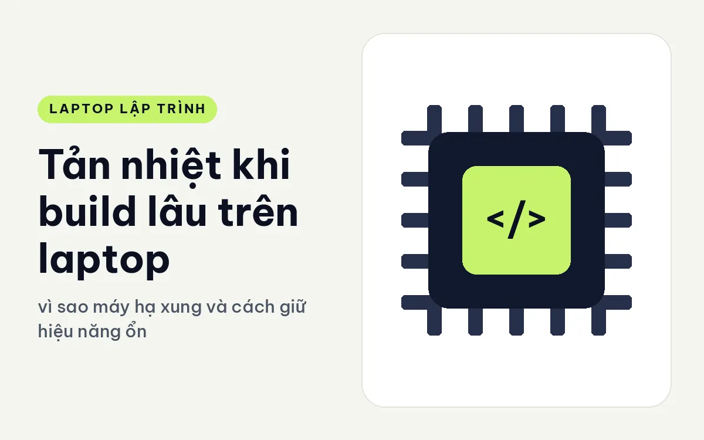
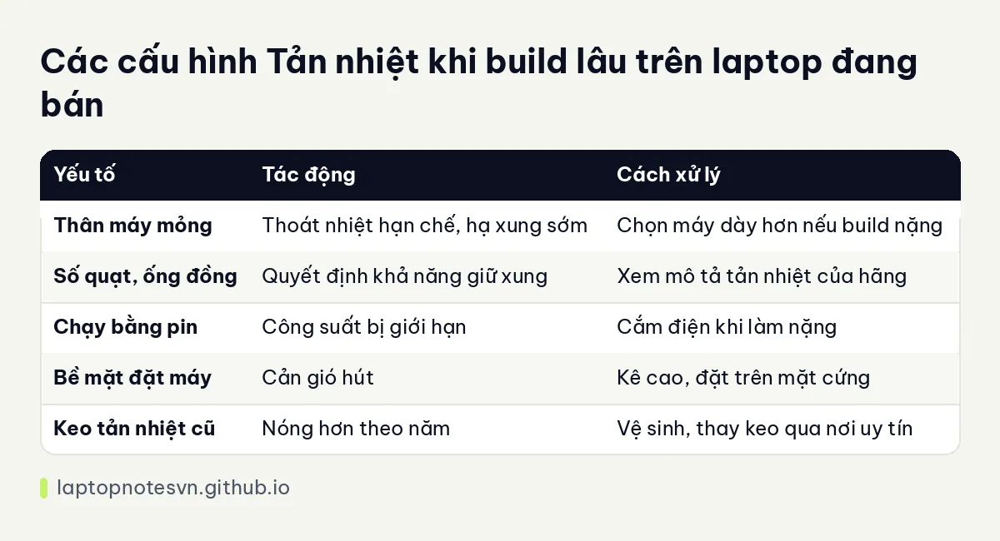

Tản nhiệt khi build lâu trên laptop - vì sao máy hạ xung và cách giữ hiệu năng ổn định

Bạn từng gặp cảnh build dự án lần đầu rất nhanh, nhưng lần thứ ba trong buổi chiều lại chậm hẳn dù mã nguồn không đổi. Hoặc máy chạy test ban đầu mát, đến phút thứ mười thì quạt rú lên và tốc độ rơi. Đó là hiện tượng hạ xung do nhiệt, một đặc điểm của mọi laptop hiệu năng cao. Hiểu nó giúp bạn chọn máy đúng và dùng máy đúng.
Bài này giải thích vì sao laptop nóng và hạ xung, các thành phần tản nhiệt, thói quen giúp giữ mát và các máy đang bán xét theo khía cạnh này. Tôi không đưa nhiệt độ cụ thể, vì nó thay đổi theo môi trường và phiên bản phần mềm của hãng.
Vì sao laptop hạ xung
Chip khi chạy nặng sinh nhiệt, và thân laptop mỏng chỉ thoát nhiệt được tới một mức. Nếu nhiệt độ chạm ngưỡng an toàn, chip tự giảm tốc độ để không hỏng. Đó là hạ xung do nhiệt. Ngoài ra, hãng còn đặt giới hạn công suất cho chip, nên dù chưa quá nóng, máy vẫn có thể giảm hiệu năng sau một thời gian để giữ tiếng ồn và nhiệt bên ngoài ở mức chấp nhận được.
Đó là lý do hai máy cùng một mã chip có thể chạy khác nhau. Máy dày hơn, có nhiều quạt và ống đồng lớn thường giữ xung cao lâu hơn máy mỏng. Chip mạnh trong thân máy mỏng chỉ đạt đỉnh trong vài phút đầu rồi hạ xuống.
Các thành phần giữ mát
Ống đồng dẫn nhiệt từ chip ra cánh tản, quạt thổi nhiệt ra ngoài. Số lượng quạt, kích thước cánh và cửa hút gió ảnh hưởng đến khả năng thoát nhiệt. Một số máy có chế độ hiệu năng, cho phép quạt chạy mạnh hơn, đổi lại ồn hơn.
Keo tản nhiệt giữa chip và tấm đồng cũng đóng vai trò, và sau nhiều năm nó khô đi làm máy nóng hơn. Nếu máy cũ nóng bất thường, vệ sinh quạt và thay keo là việc đáng làm, nhưng nên nhờ nơi có kinh nghiệm hoặc dùng dịch vụ bảo hành của hãng.
Bàn làm việc cũng góp phần. Đặt máy trên bề mặt cứng, kê cao phía sau để không khí lưu thông xuống đáy. Đế tản nhiệt có quạt có tác dụng khi cửa hút gió nằm ở đáy máy, nhưng chỉ giúp chút ít.
Việc nên làm khi build dài
Hãy cắm điện khi chạy việc nặng, vì chạy bằng pin thường bị giới hạn công suất mạnh hơn. Chọn chế độ nguồn phù hợp: chế độ cân bằng thường đủ cho phần lớn việc, còn chế độ hiệu năng cao chỉ nên bật khi thật sự cần.
Nếu build dài lặp đi lặp lại, cân nhắc giảm số luồng biên dịch song song. Chạy ít luồng hơn thì mỗi luồng giữ xung cao hơn, đôi khi tổng thời gian không chênh nhiều mà máy mát và êm hơn. Bạn nên thử trên dự án của mình thay vì tin một quy tắc chung.
Với việc nặng và dài hơn nữa, như dựng hệ điều hành hay biên dịch dự án khổng lồ, hãy cân nhắc chạy trên máy chủ riêng hoặc máy trạm. Laptop vẫn làm được nhưng không phải là nơi tốt nhất. Chuyện máy trạm di động được bàn riêng ở máy trạm di động có cần cho dev.
Bảng ghi nhớ nhanh

| Yếu tố | Tác động | Cách xử lý |
|---|---|---|
| Thân máy mỏng | Thoát nhiệt hạn chế, hạ xung sớm | Chọn máy dày hơn nếu build nặng |
| Số quạt, ống đồng | Quyết định khả năng giữ xung | Xem mô tả tản nhiệt của hãng |
| Chạy bằng pin | Công suất bị giới hạn | Cắm điện khi làm nặng |
| Bề mặt đặt máy | Cản gió hút | Kê cao, đặt trên mặt cứng |
| Keo tản nhiệt cũ | Nóng hơn theo năm | Vệ sinh, thay keo qua nơi uy tín |
Dấu hiệu nên kiểm tra máy
Nếu máy nóng bất thường khi làm việc nhẹ, quạt quay liên tục dù chỉ mở trình duyệt, hãy mở trình quản lý tác vụ xem tiến trình nào ăn CPU. Nhiều khi nguyên nhân là phần mềm chạy nền chứ không phải máy lỗi.
Nếu máy hạ xung rất sớm, trong vòng vài chục giây đã chậm hẳn, có thể quạt bám bụi hoặc keo tản nhiệt khô. Máy mới mua mà gặp tình trạng này thì nên báo bảo hành để kiểm tra.
Đừng tải các phần mềm thay đổi điện áp chip nếu bạn không hiểu rõ nó làm gì. Nó có thể giảm nhiệt nhưng cũng có thể gây mất ổn định và ảnh hưởng bảo hành.
Từ lý thuyết sang máy cụ thể
DELL XPS 13 DX13260 (2026) dùng hai quạt trong thân máy 12,7 mm, nặng khoảng 0,9 kg. Đây là máy rất mỏng, hợp việc nhẹ và vừa. Với build kéo dài nhiều phút liên tục, bạn nên tính chuyện máy hạ xung sớm hơn các máy dày.
Lenovo ThinkPad T1G Gen 8 (2026) có card RTX 5060 hoặc 5070 8GB với công suất TGP 75W, được giữ vừa phải để máy gọn, nặng 1,84 kg. Nó cân bằng giữa mang đi và hiệu năng, nhưng không phải máy để chạy nặng suốt ngày.
DELL Pro Max 16 Plus MB16250 - Mobile Workstation (2025) dày 30,9 mm, nặng 2,55 kg, dùng tản nhiệt ba quạt cho chip HX 20 đến 24 nhân. Thân máy lớn giúp giữ hiệu năng ổn định lâu hơn, đổi lại máy nặng, hợp đặt ở bàn.
Nền tảng về dòng chip và điện năng nằm ở bài CPU U, H, HX nào hợp build code.
Nếu cần so với một máy làm việc văn phòng, Dell Pro 14 cho lập trình thuộc nhóm tiết kiệm điện, ít nóng.
Đăng ngày 09/11/2026